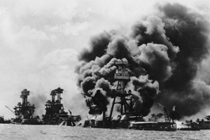

Lezione 19  La seconda guerrra mondiale
La seconda guerrra mondiale

-
270
565
-
235
300
-
130
575
-
250
55
ADDIS ABEBA
L'Italia aveva conquistato l'Etiopia nel 1936, e l'aveva annessa al suo impero coloniale. Cinque anni dopo la perde ad opera delle truppe inglesi di stanza in Africa, che in aprile riconquistano Addis Abeba, e reinsdiano il deposto Negus Hailé Selassié (qui ritratto mentre chiede aiuto contro l'invasione italiana). La comunità italiana in Etiopia è però numerosa, e non si rassegna facilmente: episodi di guerriglia e sabotaggi contro gli inglesi proseguono fino all'estate del 1943.ATLANTICO
Si definisce "battaglia dell'Atlantico" lo scontro tra i sottomarini tedeschi e i convogli che trasportavano rifornimenti - e a partire dalla fine del 1941 anche truppe - dagli Stati Uniti alla Gran Bretagna.
I sottomarini tedeschi affondano centinaia di navi, ma non riescono a impedire il flusso dei rifornimenti. E pagano un prezzo molto pesante alla superiorità tecnologica degli alleati: sonar, radar, apparecchiature in grado di intercettare l'area di provenienza dei messaggi radio.MOSCA
L'operazione Barbarossa prevedeva che le truppe corazzate tedesche raggiungessero in breve tempo i loro obiettivi nel cuore dell'Unione Sovietica. Davanti alla capitale, Mosca, si sviluppa una gigantesca battaglia. E alla fine i sovietici e il gelo dell'inverno riescono a fermare l'avanzata germanica.
La Russia ricorda ancora oggi la parata militare del 7 novembre 1941, quando i reparti che sfilarono davanti a Stalin per celebrare la rivoluzione bolscevica proseguirono direttamente verso le linee del fronte, distanti appena 30 chilometri.
PEARL HARBOUR
Il 7 dicembre 350 aerei giapponesi attaccano di sorpresa la flotta americana all'ancora nel porto di Pearl Harbour, alle Hawaii. Infliggono gravissimi danni, ma non distruggono le portaerei che in quel momento si trovano in navigazione. Soprattutto, danno al presidente degli Stati Uniti Franklin Delano Roosvelt l'occasione a lungo cercata per far scendere in guerra il suo paese.
La straordinaria potenza dell'apparato industrial-militare americano avrà un ruolo decisivo sulle sorti del conflitto.